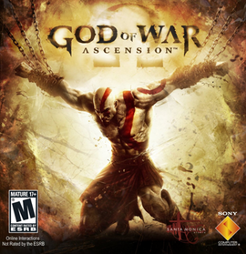
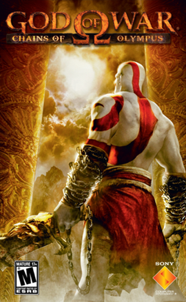
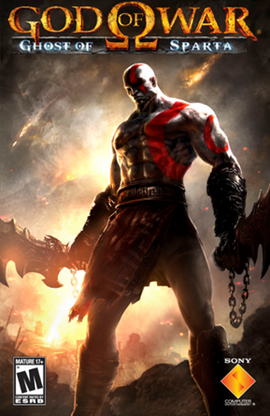
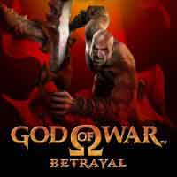
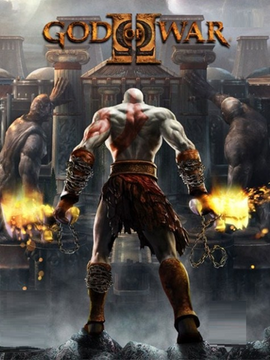
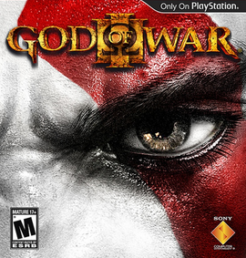
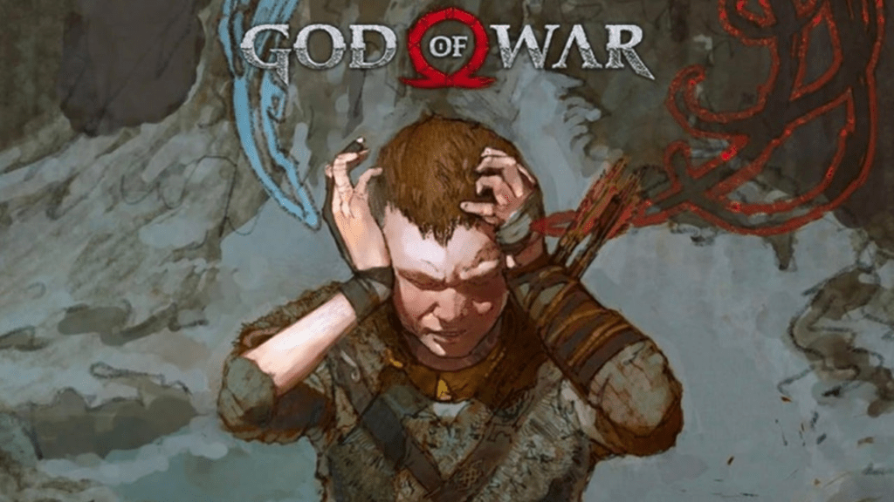
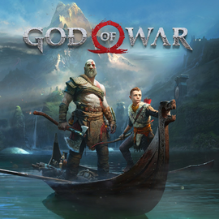
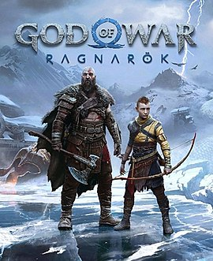

God of War: Ascension (2013)
God of War: Ascension é um jogo eletrônico de ação-aventura, produzido pela Santa Monica Studio e publicado pela Sony Computer Entertainment em exclusivo para a PlayStation 3. É o sétimo título da série God of War o primeiro da cronologia e o primeiro também a ter multijogador. God of War: Ascension foi lançado em 12 de Março de 2013 na América do Norte e Brasil, a 13 de Março de 2013 na Europa e nas regiões PAL, 14 de Março de 2013 na Austrália e Nova Zelândia e 15 de Março de 2013 no Reino Unido e Irlanda.
God of War: Chains of Olympus (2008)
God of War: Chains of Olympus é um jogo eletrônico de ação/aventura desenvolvido pela Ready at Dawn para o console portátil PlayStation Portable e pela Santa Monica Studio para o PlayStation 3. O jogo é o segundo título cronológico da série de jogos eletrônicos God of War e a prequela do primeiro God of War. O jogo foi lançado no ano de 2008, em 4 de março para a América do Norte, em 28 de março para a Europa e 10 de julho para o Japão. Este jogo é o segundo projeto desenvolvido para PSP pela Ready At Dawn, que foi responsável pela produção do sucessivo Daxter.
God of War (2005)

God of War é um jogo eletrônico de ação-aventura e hack and slash desenvolvido pela Santa Monica Studio e publicado pela Sony Computer Entertainment (SCE). Lançado pela primeira vez em 22 de março de 2005 para PlayStation 1, é o primeiro título da série com o mesmo nome e o terceiro cronologicamente. Vagamente baseado na mitologia grega, é ambientado na Grécia antiga com a vingança sendo o tema central. O jogador controla o protagonista Kratos, um guerreiro espartano que serve os deuses do Olimpo. A deusa Atena atribui a Kratos a missão de matar Ares, o deus da guerra e seu ex-mentor, que enganou Kratos para que matasse sua própria esposa e filha. Enquanto Ares ataca a cidade de Atenas por ódio a Atena, Kratos embarca em uma busca para encontrar o único objeto capaz de deter o deus de uma vez por todas: a lendária Caixa de Pandora.
God of War: Ghost of Sparta (2010)
God of War: Ghost of Sparta é um jogo de ação-aventura desenvolvido pela Ready at Dawn para o PlayStation Portable e uma versão remasterizada em HD para o Playstation 3. Cronologicamente, o jogo acontece depois do guerreiro espartano, Kratos, se tornar o novo Deus da Guerra, ou seja, logo depois do primeiro jogo da série God of War. O título mostra um pouco mais da história do Fantasma de Esparta, revelando como ele conseguiu sua mancha vermelha em sua pele e conta algumas aventuras do personagem logo depois dele se tornar um deus.
God of War: Betrayal (2007)
God of War: Betrayal é um jogo de celular de ação-aventura e hack and slash em 2D lançado em 20 de novembro de 2007. Ele foi publicado pela Sony Pictures Digital e baseado nos jogos anteriores da série God of War. Cronologicamente, ele se passa imediatamente após o God of War: Ghost of Sparta, continuando a última aventura de Kratos como um deus, antes de Zeus tirar seus poderes, fato que é contado em seu sucessor, God of War II. É considerado também como sequência de God of War, pois Ghost of Sparta é uma sequência imediata do primeiro jogo, contando as histórias e aventuras de Kratos depois de se tornar um deus. O jogo foi aclamado pela crítica por sua fidelidade à série em termos de jogabilidade e estilo de arte.
God of War II (2007)
God of War II é um jogo eletrônico de ação-aventura e hack and slash desenvolvido pela Santa Monica Studio e publicado pela Sony Computer Entertainment (SCE). Lançado pela primeira vez em 13 de março de 2007 para PlayStation 2, é o segundo jogo da franquia God of War e o sexto em ordem cronológica, sendo a continuação de God of War (2005). O jogo é vagamente baseado na mitologia grega e ambientado na Grécia Antiga, com a vingança sendo o tema central. O personagem do jogador é o protagonista Kratos, o novo deus da guerra que tomou o lugar de Ares depois de ter o matado. Kratos é traído por Zeus, o rei dos deuses do Olimpo, que tira dele sua divindade e o mata. Lentamente arrastado para o submundo, ele é salvo pela titã Gaia, que o instrui a encontrar as Irmãs do Destino, pois elas possuem o poder para fazer Kratos voltar no tempo, impedir a traição de Zeus e consequentemente sua morte.
God of War III (2010)
God of War III é um jogo eletrônico de ação-aventura e hack and slash desenvolvido pela Santa Monica Studio e publicado pela Sony Computer Entertainment (SCE). Foi lançado em 16 de março de 2010 para PlayStation 3. O jogo é o quinto da série God of War e o sétimo em ordem cronológica, sendo a continuação direta de God of War II (2007). Vagamente baseado na mitologia grega, o jogo é ambientado na Grécia Antiga com a vingança sendo o tema central. O jogador controla o protagonista e ex-God of War Kratos, depois da traição nas mãos de seu pai Zeus, rei dos deuses do Olimpo. Reignificando a Grande Guerra, Kratos sobe ao Monte Olimpo até ser abandonado pela titã Gaia. Guiado pelo espírito de Atena, Kratos luta contra monstros, deuses e Titãs em uma busca por Pandora, sem a qual ele não pode abrir a Caixa de Pandora, derrotar Zeus e acabar com o reinado dos deuses do Olimpo.
God of War: A Call from the Wilds (2018)
God of War: A Call from the Wids é uma aventura em texto do Facebook Messenger lançada antes de God of War, de 2018. A história de aproximadamente 30 minutos apresenta o filho de Kratos, Atreus, e fornece informações sobre as habilidades extra-sensoriais do personagem, enquanto adiciona mais detalhes ao seu relacionamento com Kratos e sua mãe, Faye. A história se passa algum tempo antes de God of War, quando Faye ainda está viva.
God of War (2018)
God of War[b] é um jogo eletrônico de ação-aventura desenvolvido pela Santa Monica Studio e publicado pela Sony Interactive Entertainment (SIE). Foi lançado em 20 de abril de 2018 para PlayStation 4 e em 14 de janeiro de 2022 para Microsoft Windows. É o oitavo título da série God of War e também o oitavo em ordem cronológica, sendo sequência dos eventos ocorridos em God of War III (2010). Ao contrário dos jogos anteriores, que eram vagamente baseados na mitologia grega, este título é vagamente baseado na mitologia nórdica, com a maior parte do tempo situado na antiga Noruega no reino de Midgard. Pela primeira vez na série, há dois protagonistas principais: Kratos, o antigo deus da guerra grego que é acompanhado por seu jovem filho Atreus. Após a morte da segunda esposa de Kratos e mãe de Atreus, eles viajam para cumprir sua promessa de espalhar suas cinzas no pico mais alto dos nove reinos. Kratos mantém seu passado conturbado em segredo de Atreus, que não tem consciência de sua natureza divina. Ao longo da jornada, eles encontram monstros e deuses do mundo nórdico.
God of War Ragnarök (2022)
God of War Ragnarök é um jogo eletrônico de ação-aventura desenvolvido pela Santa Monica Studio e publicado pela Sony Interactive Entertainment. Foi lançado em 9 de novembro de 2022 para PlayStation 4 e PlayStation 5. É o nono título da série God of War, o nono em ordem cronológica, e a sequência de God of War (2018). Vagamente baseado na mitologia nórdica, o jogo se passa na antiga Escandinávia e apresenta os protagonistas Kratos e seu filho Atreus. Servindo como o final da era nórdica da série, o jogo dá início ao Ragnarök, uma série de eventos que trazem o fim dos tempos e retrata a morte de alguns dos deuses nórdicos, que foi predito no jogo anterior após Kratos ter matado o deus Æsir Baldur.